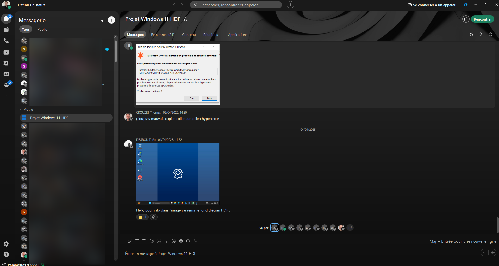
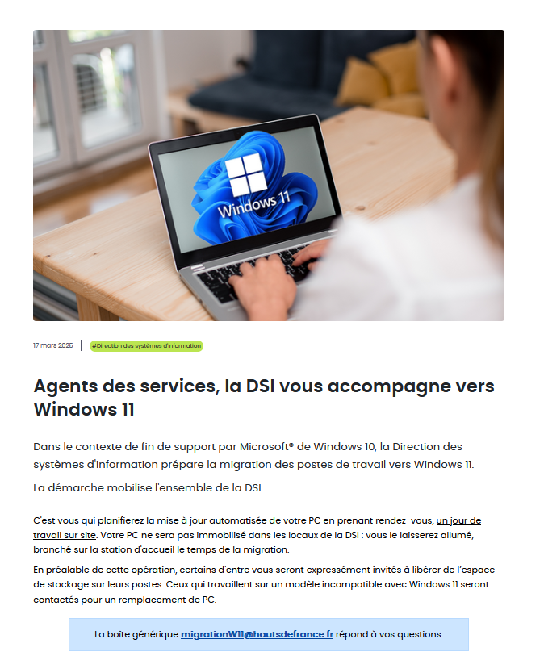

Mise en place du projet
Pour ce projet, un chef de projet a été désigné qui est le responsable de Département infrastructures, usages et poste de travail, pour mener a bien ce projet il a du :
- Préparer un diagramme de gantt pour programmer les différentes étapes
- Mettre en place des différentes réunions de projet afin de suivre l'avancement des travaux
- Gérer les différentes problèmatiques lié a cette migration et des phases de test
Pour commencer le projet un diagramme de gantt a donc était mis en place détaillant les dates limites afin de traiter les différents besoins et pour ne pas prendre de retard.

Suite a cela une communication a été éffectué, aux agents et services concernés afin de travailler en collaboration afin de préparer le projet dans les temps un group de travail a été créer sur notre messagerie instantannée Cisco Webex afin d'échanger rapidement si des questions étaient évoqués.
Des réunions mensuelles a chaque fin de mois ont donc été pévues afin de tenir informer l'ensemble des collègues et la direction de l'avancement du projet et pour vérifier que tout est bien dans les temps. Voici donc la page de garde d'un compte rendu de la denrière réunion en date.

Suite a cela des estimations on été éffectué côté poste de travail par moi et d'autres collègues car, nous allons devoir changer pas mal de machines de notre parc car ces dernières sont obsolètes, parce qu'il n'y a pas assez de place sur leurs disques durs, ou alors pour tout simplement récuperer tous les modèles d'ordinateur pour tester Windows 11 dessus, ces fichiers sont présentés durant les réunions afin de mieux nous situer.


Enfin récemment (mi mars) un article sur l'intranet de l'entreprise était mis en place pour permettre a tous les agents Région de s'inscrire a un wébinaire qui s'est déroulé fin mars afin de se tenir informé de la mise a jour de leur machine qui va arriver en avril, et de les tenir informé des changements que cette version de Windows va apporter. Suite a ce premier wébinaire les agents ont pu également exprimer des demandes sur une boite mail générique afin d'exprimer des besoins que l'on pourrait mettre en place pour que leur migration se passe pour le mieux (mise en place d'applications dans le socle de base, ajustement de parametres...)
